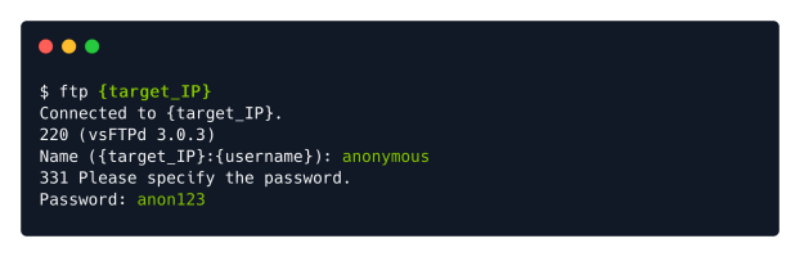

ftp
apt install ftp
Default Port: 21
ftp {Target_IP}

Check if ‘anonymous’ login is enabled.
We can use the username: anonymous
Any password will suffice.

FTP Commands:
help

Downloading FIles:
get {filename}
More FTP Commands: (WHEN USING TELNET AS A CLIENT)
USER : Command to provide Username eg. USER frank
PASS : Command to provide Password eg. PASS Admin@123
STAT : Provides added information
SYST : Shows the system type
PASV : Switches mode to “Passive”
Note: For File transfer FTP uses a separate connection.
Active Mode: Connection from server port 20 is made and then file is transfered
Passive Mode: Connection from client port above 1023 is made and then file is transfered
TYPE A : Switches File transfer mode to ASCII
(Use the following for getting executibles)
TYPE I : Switches FIle transfer mode to Binary
FTP Client Commands
passive : Command to get in/out of passive mode
ascii : Switches File transfer mode to ASCII
binary : Switches File transfer mode to Binary